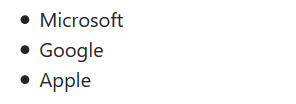
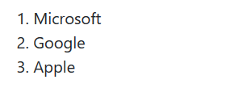
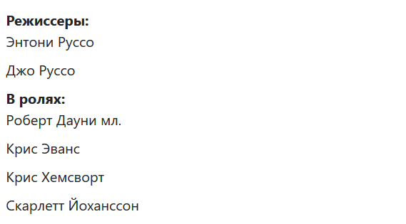

План занятия:
- Списки и их виды
- Маркированный список
- Нумерованный список
- Список определений
- Таблицы (основы)
- Практическое задание
Списки и их виды
Списки используются для группировки связанных между собой фрагментов информации. Существует три вида списков:
- маркированный список - <ul> - каждый элемент списка <li> отмечается маркером.
- нумерованный список - <ol> - каждый элемент списка <li> отмечается цифрой.
- список определений - <dl> - состоит из пар термин <dt> - <dd> определение.
Каждый список представляет собой контейнер, внутри которого располагаются элементы списка или пары термин-определение. Элементы списка располагаются друг под другом и занимают всю ширину блока-контейнера. Каждый элемент списка имеет дополнительный блок, расположенный сбоку.
Маркированный список
Маркированный список представляет собой неупорядоченный список (от англ. Unordered List). Создаётся с помощью парного тега <ul>...</ul>. В качестве маркера элемента списка выступает метка, по умолчанию это закрашенный кружок.
Каждый элемент списка создаётся с помощью парного тега <li>...</li> (от англ. List Item).
<ul>
<li>Microsoft</li>
<li>Google</li>
<li>Apple</li>
</ul>
Результат: 
Нумерованный список
Нумерованный список создаётся с помощью парного тега <ol>...</ol>. Каждый пункт списка также создаётся с помощью элемента <li>. Браузер нумерует элементы по порядку автоматически и если удалить один или несколько элементов такого списка, то остальные номера будут автоматически пересчитаны.
Для тега <ol> доступны следующие атрибуты:
| Атрибут | Описание |
|---|---|
| reversed | атрибут reversed задает отображение списка в обратном порядке (например, 9, 8, 7...). |
| start | атрибут start задает начальное значение, от которого пойдет отсчет нумерации, например, конструкция <ol start="10"> первому пункту присвоит порядковый номер «10». |
| type | Атрибут type задает вид маркера для использования в списке (в виде букв или цифр).
Принимаемые значения: 1 — значение по умолчанию, десятичная нумерация. A — нумерация списка в алфавитном порядке, заглавные буквы (A, B, C, D). a — нумерация списка в алфавитном порядке, строчные буквы (a, b, c, d). I — нумерация римскими заглавными цифрами (I, II, III, IV). i — нумерация римскими строчными цифрами (i, ii, iii, iv). |
<ol>
<li>Microsoft</li>
<li>Google</li>
<li>Apple</li>
</ol>
Результат: 
Список определений
Списки определений создаются с помощью тега <dl>...</dl>. Для добавления термина применяется тег <dt>...</dt>, а для вставки определения — тег <dd>...</dd>.
<dl>
<dt>Режиссеры:</dt>
<dd>Энтони Руссо</dd>
<dd>Джо Руссо</dd>
<dt>В ролях:</dt>
<dd>Роберт Дауни мл.</dd>
<dd>Крис Эванс</dd>
<dd>Крис Хемсворт</dd>
<dd>Скарлетт Йоханссон</dd>
</dl>
Результат: 
Таблицы (основы)
Таблицы упорядочивают и выводят на экран данные с помощью строк или столбцов. Таблицы состоят из ячеек, образующихся при пересечении строк и столбцов. Ячейки таблиц могут содержать любые HTML-элементы, такие как заголовки, списки, текст, изображения, элементы форм, а также другие таблицы. Каждой таблице можно добавить связанный с ней заголовок, расположив его перед таблицей или после неё.
Таблица создаётся при помощи парного тега <table>...</table>. Данный тег является контейнером для элементов таблицы и все элементы должны находиться внутри него.
Тег <caption> используется для создания заголовка таблицы.
Тег <tr> создает строку таблицы, а тег <td> и <th> - ячейку.
Пример таблицы с двумя строками и тремя столбцами:
<table>
<tr>
<td>Собачки</td>
<td>Котики</td>
<td>Хомячки</td>
</tr>
<tr>
<td>Попугаи</td>
<td>Белочки</td>
<td>Поросята</td>
</tr>
</table>
Практическое задание
Создать страничку с заголовком и таблицей.
Внутри таблицы создать 3 вида списков, а таблице задать заголовок.